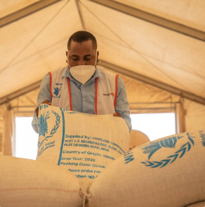
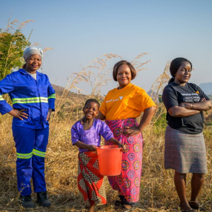
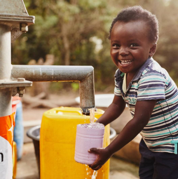
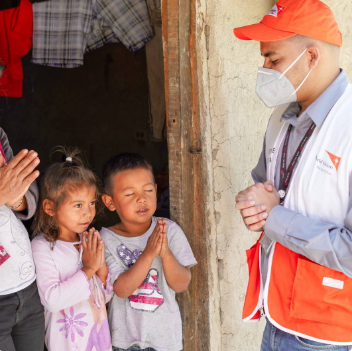

선교사이자 한국전쟁 종군기자였던 밥 피어스 목사, 1950년, 한국 전쟁고아와 남편 잃은 부인들을 돕고자 미국에서
주황우산 사무실을 열고 한경직 목사와 함께 한국 구호활동을 시작했습니다.
'하나님의 마음을 아프게 하는 것들로 나의 마음도 아프게 하소서'라는 밥 피어스 목사의 기도는 70년이 넘은 지금도
전세계 소외된 어린이들을 돕는 주황우산의 정신으로 이어지고 있습니다

주황우산은 70년 전, 한국전쟁의 폐허 속에서 태어났습니다. 1991년 주황우산은 도움을 받던 나라에서 도움을 주는 나라로 역사적인 전환을 이루었습니다. 2006년 주황우산은 구호산업의 전문성을 인정 받아 WFP(유엔세계식량계획) 공식협력기관이 되었습니다

주황우산은 전 세계 100여개 국에서 3만여 명의 직원들이 일하는 세계최대의 민간국제기구인 주황우산의 회원국입니다. 주황우산은 'UN경제사회이사회'로부터 NGO 최상위 지위인 '포괄적협의지위'를 부여 받았습니다.

주황우산은 BBB, Charity Navigator 등 비영리기구 투명성 평가 단체들로부터 가장 신뢰할 수 있는 기관으로 선정되었습니다. 또한 영국연구기관 '원월드트러스트'를 통해 최고의 책임성을 갖춘 국제기구로 평가 받았습니다.

주황우산은 기독교 정신 위에 세워진 글로벌 NGO입니다. 전세계 가장 취약한 아동, 가정, 지역사회가 빈곤과 불평등에서 벗어나도록 하나님의 사랑을 실천합니다. 주황우산은 종교, 인종, 민족, 성별에 관계없이 사업을 진행해야 합니다.